Ådum
Grobkörniger, blauschwarzer Granit mit viel weißer Quartzbildung
Höhe ü. d. Erdboden: 112 cm
Größte Breite: 74 cm
Größte Dicke: 48 cm
Runenhöhe: zw. 7,2 - 9 cm
Runeninschrift :
Thorulf setzte den Stein zum Andenken an Toki, den Sohn des Toki, den Vorzüglichsten (?). Gott helfe seiner.
14 - Ådum (auch Oddum-Stein genannt) - Letztes Update 04.08.2025
Listennummer : DR 46 / DK SJy 24
Navidaten: 55.87476 8.59523 oder: Bindesbølvej 8A, 6880 Tarm
Transliteration: þurulfs : sati : stain : uftiR : tuka : tuka : sun | hin : usta : kuþ : hialbi : hans :
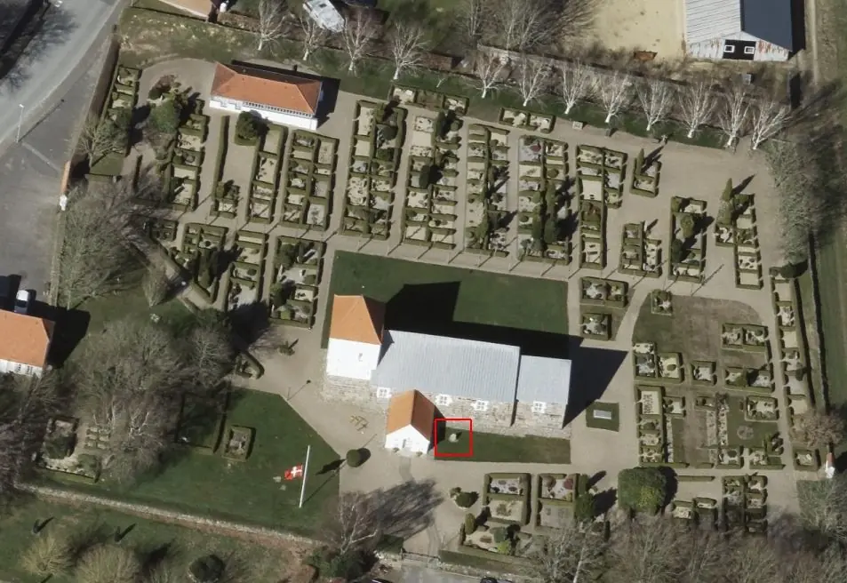
Dies ist ein Luftfoto vom 07.04.2023 von Skråfoto das die Kirche von Ådum zeigt. Skråfoto ist eine Webanwendung, die von Klimadatastyrelsen weltweit kostenlos bereitgestellt wird - Freie Nutzung unter Beachtung der Lizenz: CC BY 4.0. Die Aufnahmen werden alle zwei Jahre erneuert und neben einer Senkrechtaufnahme wird ein Schrägbild aus jeder Himmelsrichtung angeboten, das man über eine Adresssuche aufrufen kann. Den Standort des Runensteins habe ich rot umrandet.
Dieser Runenstein, auch Oddum-Stein genannt, fand sich durch Jon Skonvig (*1600 - 1664, Pfarrer und der Runenzeichner für Ole Worm) im Jahre 1627 am Eingang zum Kirchhof von Ådum in der Umfriedungsmauer. Jon Skonvig war zuvor von Ole Worm (*13.05.1588 - 31.08.1654, Arzt, Universalgelehrter und der Begründer der Runologie)
 Bildquelle:
Digitale Sammlung der Königlichen Bibliothek Kopenhagen -
Lizenz:
Public Domain
Bildquelle:
Digitale Sammlung der Königlichen Bibliothek Kopenhagen -
Lizenz:
Public Domain
ins Land hinaus entsandt worden, um die bekannten Runendenkmäler zu untersuchen und zu zeichnen. Es ist darüber einer der ältesten bekannten dänischen Runensteine.
Erst in neuerer Zeit wurde der Runenstein an seinen jetzigen Standort, in die südöstliche Ecke, zwischen Kirchenschiff und Waffenhaus, umgesetzt.
Die Inschrift beginnt unten im linken äußeren Textstreifen und setzt sich dann im rechten äußeren Band nach unten fort. Von unten geht es in der inneren rechten Linie weiter und setzt sich nach links unten fort, wo sie dann von unten kommend im Mittelteil endet. Spiralen und Bögen vervollständigen die Textstreifen, die ein Dreieck auf der Breitseite des Steins bilden. Für die vollständige Formel "Gott helfe seiner Seele" war einfach nicht genug Platz auf dem Stein, so dass wohl nur deswegen das Wort "Seele" fehlt.
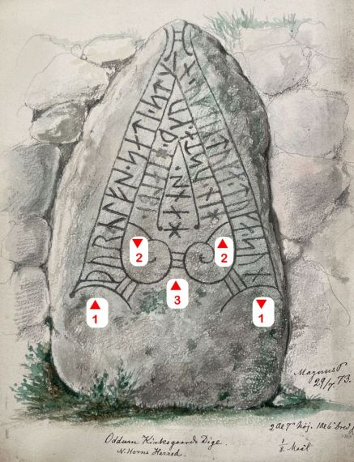
Die Inschrift wird in die späte Wikingerzeit, an den Übergang ins Mittelalter datiert (1000-1250).
Laut einer Untersuchung durch ein Team des Nationalmuseum in Kopenhagen aus dem Jahre 1904 steht der Runenstein möglicherweise in Verbindung mit zwei sehr großen Grabhügeln südlich von Ådum - Hügel "Sortehøj" (Beschreibung 1980: 1,7 x 14,0 x 12,0 m. Sehr uneben, im nordöstlichen Teil der Spitze ein ungefähr quadratisches Loch, 2 x 2 m, 1 m tief, südwestlich dieses schmalen, tiefen Grabens (Alte Fuchsgrube?). In Richtung W und S großer alter Kartoffelkeller. Der Umfang des Hügels ist schwer zu erkennen. Im Süden große Steine, einige möglicherweise Randsteine, andere entfernt. Alle Schäden alt. Auf der 4-cm-Karte Sortehøj genannt. Vegetation aus Gras und Laubgebüsch) - Hügel "Hvilehøj" (Beschreibung 1980: 2,0 x 18,0 x 18,0 m. Oben Vertiefung 2 x 3 m, 0,3 m tief, mit Fuchsgrube. Ca. auf halber Höhe der hohen Seite rundherum ca. 1,5 m breite Terrasse, Form nach dem Entfernen von Randsteinen oder im Rahmen der Landschaftsgestaltung. Alles alte Schäden, überwuchert. Auf der 4-cm-Karte Hvilehøj genannt. Vegetation aus Gras und Laubgebüsch).
Bei einer Renovierung der Kirche im Jahre 2003 kamen an den originalen Eichenbalken in der Kirche Runenritzungen zu Tage, die bisher nicht runologisch untersucht wurden - DK Nr.: SJy 75. Es handelt sich um sogenannte "Runen als Zimmermannszeichen" über die Erik Moltke (*04.04.1901 - 19.10.1984, Runologe, Historiker - link-LIVES)
 Bildquelle: Scan von Buchumschlag "Runerne i Danmark og ders
oprindelse" - Erik Moltke - 1976 - Lizenz:
CC-BY-SA
Bildquelle: Scan von Buchumschlag "Runerne i Danmark og ders
oprindelse" - Erik Moltke - 1976 - Lizenz:
CC-BY-SA
im Jahrbuch "Aarbøger for nordisk oldkyndighed og historie" von 1953, ab der S. 151 ff. eine 6-seitige Abhandlung veröffentlicht hat.
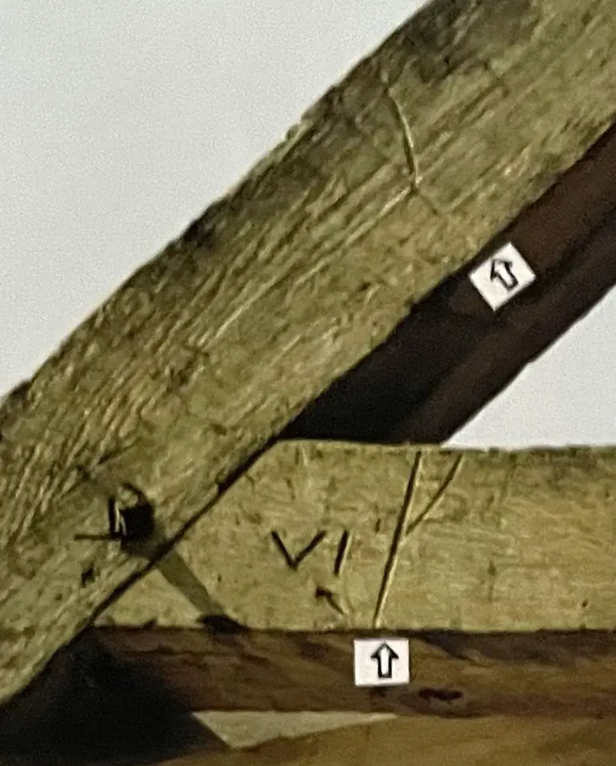
Beispiel - Eigene Fotografie aus einer vor Ort ausgelegten Infomappe.Ich habe ein eigenes Foto aus den 1980er Jahren digitalisiert und links eingestellt.
Am Montag, 30.05.2022, habe ich im Rahmen meiner 2022er Jütland Wikingertour auch Halt an der Kirche von Ådum gemacht. Dabei habe ich diese Fotografien gefertigt.
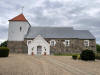 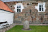 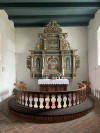 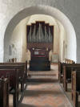 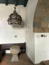 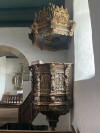
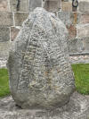 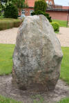 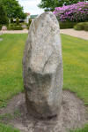 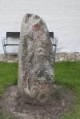 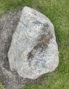

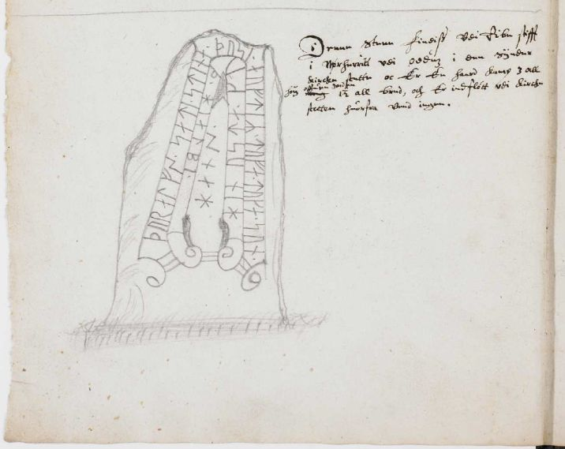
Quelle: Erik Moltke - Jon Skonvig og de andre runetegnere. Et bidrag til runologiens historie i Danmark og Norge I-II, 1956-58, Band 1 - S. 80 - Lizenz: CC-BY-SA
Die Aufzeichnungen von Jon Skonvig - sechs Handschriften - haben sich in der sogenannten "Arnamagnæanske samling, AM 366-371 fol." (zu deutsch: Arnamagnäanische Sammlung) erhalten und wurden teilweise digitalisiert.
Die entsprechende Seite 16v der AM 367 fol. zeigt die Runensteinzeichnung von Skonvig und seine dazu angefertigten Aufzeichnungen - siehe Zeichnung oben rechts.
Neben die Zeichnung hat Jon Skonvig diesen Text geschrieben:
"Denne Steen Findiss Vdi Ribe stifft i Nørherritt vdi oddum i den Sÿnder Kircke stette oc Er En haard Kamp 3 all hoÿ offuen Jorden 1 ½ all bred, och Er indfløtt vdi Kircke stetten huorfra Veed ingen".

Am Mittwoch, 28.09.2022, war ich in der Universität Kopenhagen in der Arnamagnæanske Samling und durfte das Original - AM 367 fol. - in Händen halten und eingehend fotografieren. Man bat mich aber von einer Veröffentlichung meiner Fotos abzusehen und stattdessen auf die digitalisierte Handschrift über www.handrit.is zu verweisen.
Hier der Stich aus dem Buch von Ole Worm (*13.05.1588 - 31.08.1654, Arzt, Universalgelehrter und der Begründer der Runologie) von 1643 - Danicorum monumentorum libri sex - Seite 323, der auf der o.a. Zeichnung von Jon Skonvig basiert:

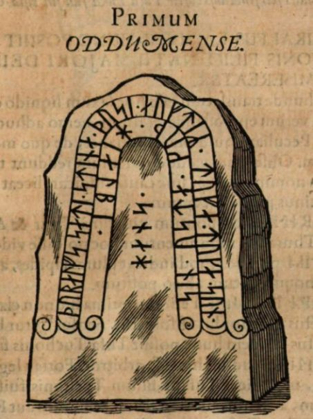
Quelle: Erik Moltke - Jon Skonvig og de andre runetegnere. Et bidrag til runologiens historie i Danmark og Norge I-II, 1956-58, Band 1 - S. 80 - Lizenz: CC-BY-SA / rechts rechts Screenshot aus dem Exemplar aus der Bayerische Staatsbibliothek / MDZ Münchener DigitalisierungsZentrum Digitale Bibliothek - urn:nbn:de:bvb:12-bsb10800415-0 - Seite 323 - abgerufen 25.11.2022
Per Dekret vom 9.2.1652 (siehe: Nordisk Tidsskrift for Oldkyndighed, Band 1, 1832 - ab S. 324 unten) sollte der Runenstein nach Kopenhagen überführt werden: "...Peder Reedz til Lundenes Lehn: Oddum-Stenen..."Der Aufforderung kam man aber in Ådum nicht nach. Seitens Kopenhagen wurde nicht nachgehakt, da dort 1654 die Pest ausbrach, was auch Ole Worm noch im gleichen Jahr den Tod brachte.
Neben der Veröffentlichung durch Ole Worm (siehe unten) findet sich die nächste Erwähnung des Runensteins bei Johannes Meier (1660, Lehrer und Verfasser) in seinem Werk Liber monumentorum Danicorum, qvi monumenta Danica Olai Wormii partim emendat partim locupletat (pdf-Datei anhand eigener Fotos von mir erstellt) von 1654 (Blatt 29) - Königlichen Bibliothek in Kopenhagen - GKS 2371 kvart

 Bildquelle:
Wikipedia - Lizenz:
Public Domain
Bildquelle:
Wikipedia - Lizenz:
Public Domain
hinzugefügt worden sein. Text und Zeichnungen der Handschrift - auch im Zusammenspiel - sind ansehnlicher ausgeführt als in NKS 799.
In der Königlichen Bibliothek in Kopenhagen hat sich von Johannes Meier aber auch noch eine zweite Handschrift erhalten - NKS 799 kvart - Joh. Mejeri Monumenta Runica in Dania (pdf-Datei anhand eigener Fotos von mir erstellt).


Deren Entstehungsdatum ist nicht bekannt. Der Runenstein findet sich auf Blatt 28 - Papier - 44 Blatt, Blatt 41-44 unbeschrieben, aus dem 18. Jahrhundert, vormals Nr. 70 in der Manuskript Sammlung von Peder Frederik Suhm (*18.10.1728 - 07.09.1798, der bedeutendste dänisch-norwegische Historiker des 18. Jahrhunderts)
 Bildquelle:
Wikipedia - Lizenz:
Public Domain
Bildquelle:
Wikipedia - Lizenz:
Public Domain
Es handelt sich um
ein Büchlein mit einfachem Pappeinband, der Buchrücken ist aus
Leder und
verstärkte Ecken aus Leder weist der Buchdeckel auf. Es hat die
Maße: H: ca. 20
cm / B: ca. 17 cm / D: ca. 1,5 cm. Zu den einzelnen Zeichnungen im Büchlein
wurde ein einfacher Maßstab abgebildet.
Bei beiden Exemplaren
weist immer das rechte Blatt der Doppelseite in der oberen Ecke eine mit
Bleistift geschriebene Seitenzahl auf. Diese beiden Werke sind Abschriften von
früheren Werken, die die Zeit nicht überdauert haben.
Vielleicht sind sie in
Kopenhagen beim Großbrand von 1728
vernichtet worden, als neben zahlreichen privaten Beständen auch ca.
35.000 Bücher der
Kopenhagener Bibliothek ein Raub der Flammen wurden!
Die
GKS 2371 kvart soll laut
Prof. Ludv. F. A. Wimmer
(*07.02.1839 -
29.04.1920, Philologe und Runenforscher
-
link-LIVES)
 Bildquelle:
Fotografie zw. 1877-1900 von Fotograf Hansen & Weller
-
Det Kgl. Biblioteks billedsamling - Lizenz:
Public Domain
Bildquelle:
Fotografie zw. 1877-1900 von Fotograf Hansen & Weller
-
Det Kgl. Biblioteks billedsamling - Lizenz:
Public Domain
und seinen Infos von Christian Walter Bruun (*10.12.1831 - 28.02.1906, Königlicher Oberbibliothekar - link-LIVES)
 Bildquelle: Fotografie
um 1880 von Fotograf J. Petersen
(*19.03.1829 -
01.02.1905) -
Det Kgl. Biblioteks billedsamling - Lizenz:
Public Domain
Bildquelle: Fotografie
um 1880 von Fotograf J. Petersen
(*19.03.1829 -
01.02.1905) -
Det Kgl. Biblioteks billedsamling - Lizenz:
Public Domain
von
Niels Foss selbst abgeschrieben worden sein. Er hat die Texte laut
den Studien von
Erik Moltke
(*04.04.1901 - 19.10.1984, Runologe, Historiker)
offenbar überarbeitet, verkürzt oder geändert und seine eigene
Orthografie eingebracht (z.B. alt: haffuer - bei Foss: haver / tyck/tyk /
kircke/kirke / oc/og u.a.).
In der
NKS 799 kvart hingegen steht auf der Seite 37 links unten "Niels
Knudsen Jerne" und seine Handschrift lässt vermuten, dass er die
gesamte Abschrift angefertigt hat. Er war offenbar ein professioneller Schreiber
und könnte mit dem Niels Knudsen identisch sein, der
1728 "Skriverkarl" auf dem Holmen (Stadtviertel von
Kopenhagen) war, also ein Mann der schnell viele Texte schreiben und liefern
konnte. Er wurde am 08.11.1737 zum "ekvipageskriver"
ernannt. Es scheint dass er sich entgegen
Niels Foss sehr eng an das Original gehalten hat.
Offenbar gab es laut dem Katalog über die Büchersammlung
von
Peter
Hansen Resens (*17.06.1625 -
01.06.1688)
 Bildquelle:
Wikipedia - Lizenz:
Public Domain
Bildquelle:
Wikipedia - Lizenz:
Public Domain
"Bibliotheca
Regiæ Academiæ Hafniensi donata" Hafniæ (Kopenhagen) von
1685 - siehe
S. 273 - früher noch ein drittes Werk von
Johannes Meier mit dem Titel "Johan. Meieri
liber MS. de Monumentis Runicis sive antiqvis Danicics".
Quellen:
Erik Moltke -
Jon Skonvig og de andre runetegnere. Et bidrag til runologiens historie i
Danmark og Norge I-II,
1956-58
Band 2 -
Kapitel
13 / eigene Recherchen
Zwischen Montag, 26.09.2022, und Mittwoch, 28.09.2022, habe ich in der Königliche Bibliothek - Den sorte Diamant - in Kopenhagen - u.a. diese beiden alten Handschriften nach Online-Vorbestellung zur Ansicht erhalten. Ich durfte mir Aufzeichnungen machen, sie aber auch uneingeschränkt fotografieren. Ich habe sie mit dem Smartphone komplett als Doppelseiten fotografiert und daraus jeweils eine pdf-Datei erstellt. Vielleicht hat ja jemand Bedarf an diesen seltenen Ausgaben, die aufgrund ihres Alters keinem Urheberrrecht mehr unterliegen.
Der Nachlass von Prof. P. G. Thorsen (*07.08.1811 - 06.05.1883, Bibliothekar, Runenforscher und Historiker - link-LIVES - Artikel: Levnedsbeskrivelser af de ved Københavns Universitets Firehundredaarsfest promoverede Doktorer, Illustreret Tidende 1882, Nr. 1235 - vom 27.05.1833 / Grabstein in Varde / Eheschließung in Varde am 19. August 1848)
 Bildquelle: Fotografie zw. 1863-1900 von
Fotograf Budtz Müller (*26.12.1837 -
30.12.1884) -
Det Kgl. Biblioteks billedsamling - Lizenz:
Public Domain
Bildquelle: Fotografie zw. 1863-1900 von
Fotograf Budtz Müller (*26.12.1837 -
30.12.1884) -
Det Kgl. Biblioteks billedsamling - Lizenz:
Public Domain
befindet sich in der Königlichen Bibliothek unter NKS 3296 kvart (Bezeichnet als: P. G. Thorsens optegnelser, tegninger m.m. vedrørende runer og runemindesmærker - überführt aus der Kopenhagener Universitätsbibliothek 1929 - Gemäß Ministerialschreiben vom 04.03.1929; früher benannt als Additamenta 612 kvart - verteilt auf mehrere einzelne Pappschachteln). Dort fand ich bei meinem Studienaufenthalt am 27. September 2022 in der Schachtel 6 - genau wie es in Danmarks Runeindskrifter von Jacobsen/Moltke im Beitrag zu diesem Runenstein auf der S. 83 vermerkt ist - diese handschriftliche, undatierte Aufzeichnung (unter der Zeichnung steht aber wohl die Zahl 1702 ?) von Pfarrer Peder Jensen Lucoppidian (*20.04.1651 - 31.12.1717, Pfarrer und Altertumsforscher) mit dem Titel "Cogitationes super Monumentum Oddumense aliter qvam a Wormio delineatum" - übersetzt: "Gedanken zum Oddum Denkmal, ansonsten, wie von Ole Worm gezeichnet".
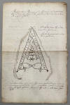 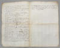 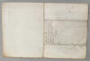


Er war ab 1672 bis zu seinem Tod im Jahr 1717 Pfarrer in den Kirchen zu Landet und zu Bregninge auf der kleinen Insel Tåsinge (Nur knapp 70 km2, südlich der Insel Fünen). Hier ein Link zu seiner Selbstbiografie im "Enesteministerialbog" (Nr. 6 - rechte Seite oben) in dem von 1646-1733 die amtlichen Aufzeichnungen vorgenommen wurden und das vom Rigsarkivet in Kopenhagen digitalisiert eingestellt wurde.
In Svendborg befindet sich in der Skt. Nikolaj Kirche ein großes Gemälde (194 x 245 cm) das Peder Jensen Lucoppidian mit seiner Frau Anna Christine Jørgensdatter Falster (*24.03.1654 -27.03.1714) aus Odense mit ihren 12 Kindern zeigt. Es ist im November 1696 vom Odenseer Maler Thomas Jacobsen (Westenholtz) signiert.
Das Foto von dem Gemälde hat Arnold Mikkelsen 2010 aufgenommen - Informationen Quelle: Danmarks kirker - Skt. Nikolaj Kirke - S. 207 ff.

Bildquelle: Digitale Datenbank des Nationalmuseums Kopenhagen - Foto: Arnold Mikkelsen - Lizenz: CC-BY-SA
Sehr ausführliche Gemäldebeschreibung aus Danmarks Kirker - S. 208 ff. (Übersetzt): "Das große Gemälde, 194×245 cm, ist in Öl auf Leinwand gemalt und in einen profilierten, schwarz bemalten Rahmen aus dem Jahr 1835 eingefügt, der vom Kaufmann A. Carre bezahlt wurde. Es zeigt die Familie des Priesters, prächtig gekleidet nach der Mode der Zeit, vor dunklem Hintergrund dem Betrachter gegenüberstehend. In der Mitte steht Peder Lucoppidan im Ornat, die linke Hand ruht auf der Brust und ein Buch in der rechten. Zu seiner Linken sind die Frau und die beiden Töchter des Paares. Alle drei werden in einem aus rot-goldenem Brokat genähten Kleid mit eng anliegender Taille und weitem Saum dargestellt, darüber ein kurzer Mantel, aus dessen Ärmeln der markante Spitzenbesatz hervortritt. Um ihren Hals und ihre Handgelenke tragen sie Ketten und Armbänder aus Gold und Perlen, und auf dem nach oben gerichteten Haar ruht eine Fontäne. Die Mutter hält in ihrer rechten Hand eine Zitrone, vermutlich als Zeichen des Wohlstands, während die Töchter Fächer tragen; die älteste auch eine Blume. Rechts vom Vater stehen die sieben Söhne des Paares in Keilformation dem Alter entsprechend, alle barhäuptig mit mittellangem Haar in Blondtönen. Sie tragen eine schwarze, braune oder graue Jacke mit einem weißen Spitzenhalstuch über einer langen roten oder blauen Weste mit glänzenden Knöpfen. Die beiden jüngsten Jungen halten sich an den Händen und einer hält eine rosa Rose. Vorne auf der linken Bildseite liegen die drei toten Säuglinge des Paares auf einem roten Kissen, in helle Leichentücher gehüllt, mit geschlossenen Augen und über der Brust gefalteten Händen. In der unteren rechten Ecke befindet sich die Signatur des Malers »Th. Jacobsen pinx. 1696 Novembris«. In der oberen linken Ecke befindet sich eine sekundäre, gemalte Spenderinschrift in heller Antik: Dies gegeben an die Nikolaikirche des Seligen Christus Morsing, Pfarrer der Landgemeinde Taasing, von seiner Witwe Johanne Morsing, die hier in Svendborg am 2. Januar 1776 starb". Die Umstände der Entstehung des Gemäldes sind nicht bekannt, vermutlich handelt es sich jedoch um ein Original, wohl als privates Familienporträt gemalt und im Familienhaus des Priesters aufgehängt. Es enthält jedoch auch Elemente eines Epitaphgemäldes, etwa die toten, gewickelten Babys im Vordergrund, und fungierte durch seine sekundäre Aufhängung in der Kirche auch als Sterbedenkmal. Der Lokalhistoriker Hans Rasmussen recherchierte, wie das Gemälde in der Skt. Nikolaj-Kirche gelandet sein könnte. Nach Peder Jensen Lucoppidan wurde der Sohn Niels Priester und seine Witwe heiratete seine beiden Nachfolger. Der letzte von ihnen war Christen Henriksen Morsing, der in 2. Ehe die Johanne heiratete, die das Bild der Kirche in Svendborg schenkte, und die wahrscheinlich nach dem Tod ihres Mannes in die Stadt zog. In der Kirche wurde das Gemälde zunächst wohl über dem Stuhl des Kaufmanns Hans Torbjørnsen aufgehängt, d. h. wahrscheinlich auf der Südseite der Kirche. 1830 hing es an der Nordwand des Langhauses; vielleicht in der Nähe der Kanzel wie am Ende des Jahrhunderts und nach der Restaurierung 189294 über der Tür zur Sakristei; Mittlerweile wurde es an seinen jetzigen Standort an der Nordwand des Turmzimmers verlegt."
Der Lokalhistoriker/Schulleiter Hans Rasmussen veröffentlichte seine Studien mit der Abhandlung "Det saakaldte Morsingske (rigtigere Lucoppidanske) Familiebillede i Nicolai Kirke i Svendborg" in der Personalhistorisk Tidsskrift, Årg. 19, 1898, 4. Række, 1. Bind. Er berichtet darin, dass das Gemälde während einer Kirchenrestaurierung in einem Raum im Rathaus aufbewahrt wurde. Dort wollte er es fotografieren und da es stark verschmutzt war, hat er es abgewaschen und dabei diese bis dahin unbekannte Signatur in der unteren rechten Ecke entdeckt : "Th. Jacobsen pinx. 1696 Novembris". Erst darüber wurde klar, dass hier nicht die Familie Morsing dargestellt ist. Rasmussen studierte daraufhin die fragliche Priesterreihe und stieß dabei auf Peder Jensen Lucoppidian. In alten Kirchenbüchern der Skt. Nikolaj Kirke fand er dann die volle Bestätigung seiner Vermutung. Peder Jensen Lucoppidian starb 1717 und wurde von seinem Sohn Niels Pedersen im Amt abgelöst, der zum ersten Mal mit Dorthea Poulsdatter Langeland aus Svendborg verheiratet war, die 1721 starb. Zum zweiten Mal heiratete er Karen Hansdatter Rask aus Odense, allerdings verstarb er 1730, und seine Witwe heiratete daraufhin den Amtsnachfolger Mathæus Reutze aus Fünen. Der starb 1738 und die Witwe heiratete zum dritten Mal den Nachfolger, Christen Henriksen Morsing (1760), und bei dieser Gelegenheit ging das Gemälde in den Besitz der Familie Morsing über. Morsing war 1745 Witwer geworden und heiratete in 2. Ehe Johanne Bang, die das Bild letztlich der St. Nikolaj Kirche schenkte.
Im Landet og Bregninge Kirkenbuch fand Hans Rasmussen noch die Namen/Geburts-/Sterbedaten der zwölf Kinder, die alle auf dem Bild abgebildet sind. Töchter: Barbara Cathrine *17.11.1679 - Margrethe Sophie *26.03.1694 / Söhne: Jens *21.04.1682 - Jørgen *03.07.1684 - Niels *20-21.02.1686 - Knud *?.10.1688 - Ditlev *27.04.1690 - Mogens *03.10.1691 - Peder *13.12.1692. Dazu die drei im Säuglingsalter verstorbenen Kinder: Birte * und 17.10.1680 - Margrethe *30.05.1687 und 21.08.1687 - Andreas *10.09.1696 und 17.09.1696.
Ausweislich von diesem Eintrag im "Enesteministerialbog" wurde Peder Jensen Lucoppidian am 27.04.1651 getauft, d.h. er kommt also von dort. Sein Studium hat er in Kopenhagen mit einem Magister abgeschlossen. Er hat auch weitere Informationen zu Runeninschriften angemeldet. Mit einem Brief vom 27.03.1702 an Otto Sperling (*03.01.1634 - 18.03.1715, deutsch-dänischer Jurist und Universalgelehrter) weist er auf ein Räuchergefäß mit einer Runeninschrift (übersetzt: "Meister Jakob Rød erschuf mich") in der Kirche von Bøstrup hin - heute im Nationalmuseum in Kopenhagen. Ein weiterer Brief mit diesem Datum hat er zu dem heute verschwundenen Räuchergefäß aus der Kirche von Svinninge an Otto Sperling gesandt. Zu dem Sarkophag mit Runen in der Kirche von Bregninge/Insel Tåsinge (98-seitige, reich bebilderte Abhandlung aus dem Jahr 2020 in Danmarks Kirker) hat er ebenfalls einen Brief mit Datum vom 27.03.1702 wieder an Otto Sperling geschickt. Die drei Briefe finden sich heutzutage in der Königlichen Bibliothek in Kopenhagen in der Sammlung Thott 1869 kvart.
Hans Christian Andersen (*02.04.1805 - 04.08.1875 - link-LIVES - Begräbnisprotokoll),
 Bildquelle:
Wikipedia - Lizenz:
Public Domain
Bildquelle:
Wikipedia - Lizenz:
Public Domain
der bekannteste Dichter und Schriftsteller Dänemarks, hat während seines Sommeraufenthalts in Svendborg im August 1836 dieses Gemälde gesehen und war fasziniert vom Personenkreis. Einer der kleineren Jungen (der mit der Rose) in der Front stach für ihn als der unschönste heraus, und bezeichnenderweise nutzte er dieses Thema des Außenseiters in seinem 3-teiligen Roman Nur ein Geiger. 1837 als dritter Roman des Autors - autobiographisch eingefärbt - erschienen, erzählt Andersen die melancholische Geschichte eines künstlerischen Scheiterns - es geht um den talentierten Geiger Christian.
Wie Peder Jensen Lucoppidian von der Insel Tåsinge aber zu dem in Südjütland befindlichen Runenstein von Ådum kam, konnte ich bislang noch nicht ergründen.
Peder Hansen Resen (*17.06.1625 - 01.06.1688, Jurist und Historiker)
Bildquelle:
Wikipedia - Lizenz:
Public Domain
Er hat mit dem von ihm über 20 Jahre gesammelten Material das großartige Werk "Atlas Danicus", bestehend aus letztlich 39 Folianten, geschaffen. Nur geringe Teile wurden aber schon zu seiner Lebzeit gedruckt. Die Folianten wurden wenige Jahre nach seinem Tod 1692 an die Königliche Bibliothek Kopenhagen übergeben. Aufbewahrt wurden sie auf dem Dachboden der Trinitatis Kirche. Dort wurden sie fleißig studiert, abgeschrieben und zeitweise ausgeliehen. Leider wurde dann ein Großteil davon beim Kopenhagener Großbrand 1728 zerstört. Es hat sich neben einigen Originalseiten - siehe Arnamagnäanische Sammlung - AM 359 fol. / AM 360 fol. / AM 361 fol. und AM 362 fol. (digitalisiert) - nur eine (verkürzte) Abschrift und außerdem Kupferstiche von etwa 200 Städteansichten aus der Vogelperspektive erhalten. Originale dieser AM 359/360/361 fol sind über die Universität Kopenhagen - Institut for Nordiske Studier og Sprogvidenskab (NorS) - AM 359 fol / AM 360 fol / AM 360 fol (Karten) / AM 361 fol - in sw abrufbar. Eine zweite (verkürzte) Ausgabe war von Vincent Lerche (*04.04.1666 - 28.07.1742, Jurist, Architekt) beauftragt worden, diese wurde aber beim Brand von Schloss Christiansborg im Jahr 1794 vernichtet.
In der Königlichen Bibliothek in Kopenhagen wird seit 1803 in der Sammlung Uldall 186 folio diese einzige verbliebene Ausgabe, die in den 1750er Jahren durch den Hofbaumeister Laurids de Thurah (*04.03.1706 - 06.09.1759, dänischer Architekt, Baumeister, Architekturhistoriker und Topograf)
 Bildquelle:
Wikimedia - Lizenz:
Public Domain
Bildquelle:
Wikimedia - Lizenz:
Public Domain
aus verstreuten Resten des Atlas Danicus in 7 Bänden rekonstruiert worden war, aufbewahrt:
Wie diesem Titel zu entnehmen ist, gehörte dieses Exemplar vormals Adam Gottlob Graf von Moltke (*10.11.1710 - 25.09.1792, Staatsmann, Diplomat)
 Bildquelle:
Wikimedia - Lizenz:
Public Domain
Bildquelle:
Wikimedia - Lizenz:
Public Domain
Nach dessen Tod erwarb Herman Treschow (*11.12.1739 - 02.05.1797, Professor für Theologie, Pfarrer) diese Ausgabe. Peter Uldall (*29.06.1743 - 11.11.1798, Jurist, Theologe)
 Bildquelle:
Wikimedia - Lizenz:
Public Domain
Bildquelle:
Wikimedia - Lizenz:
Public Domain
wiederum kaufte sie für 170 Rigsdaler (Rigsdaler zu 24 Skilling - damals 1 ½ Mark) nach dessen Ableben. Er hatte aber nicht lange Freude daran, denn er starb ein Jahr später an einem Schlaganfall. Sein Sohn, Justizrat W. A. Uldall, schenkte diese Ausgabe der Kgl. Bibliothek im Jahr 1803, wo dieses großartige Werk noch heute verwahrt wird - Ein Band hat übrigens die stolze Größe H/B/D von 40 cm x 29,5 cm x 9,5 cm.
Im Atlas VI. hat sich auf der Seite 763-64 ein Eintrag (letzter Absatz) / eine Zeichnung (...die ausgeschnitten und eingeklebt worden ist) zum Runenstein erhalten, die ich am 28.09.2022 vor Ort fotografieren durfte.
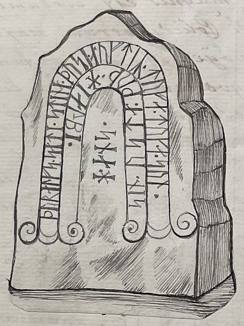

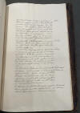

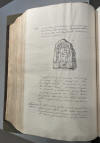


Übersetzung vom Lateinischen ins Dänischen in: ATLAS DANICUS VI D Ribe Stift - Udgivet af Susanne Lykke Nielsen - 1987 - S. 151-152: Nørre [Horne] herred - Oddum
"I Nørre [Horne] herred nær ved landsbyen Oddum ved den sydlige port er der en sten, som rager tre (764) alen op over jorden i højden og halvanden i bredden, og hvis venstre side er beskrevet med runer, som på følgende billede:
Zeichnung (siehe oben)
Man kan gengive den samme skrift med følgende latisnke bogstaver: Turalf Sati Stina dus auftir Tufa - Tuka sin suna usta. Rud hialpa hans. Når man har rettet skrivefejlene, kommer der, som også Worm har set, følgende mening ud af den: Turalf satte denne sten over Tufe, Toke ældste søn; Gud være dem gnådig."
Übersetzung ins Deutsche durch mich: "Im Bezirk Nørre [Horne] in der Nähe des Dorfes Oddum am Südtor befindet sich ein Stein, der drei (S. 764) Ellen hoch und anderthalb Ellen breit ist und dessen linke Seite mit Runen beschrieben ist, wie im folgenden Bild:
Zeichnung (siehe oben)
Diese Inschrift kann mit den folgenden lateinischen Buchstaben wiedergegeben werden: Turalf Sati Stina dus auftir Tufa - Tuka sin suna usta. Rud hialpa hans. Nach Korrektur der Schreibfehler ergibt sich daraus folgende Bedeutung, wie auch Worm sie gelesen hat: Turalf setzte diesen Stein über Tufe, Tokes ältestem Sohn; Gott sei ihnen gnädig."
Erik Pontoppidan (der Jüngere, *03.09.1698 - 20.12.1764, dänischer Theologe, Prediger, Historiker und Autor)
 Bildquelle:
Wikipedia - Lizenz:
Public Domain
Bildquelle:
Wikipedia - Lizenz:
Public Domain
macht in seinem Werk von 1769 "Den Danske Atlas" - Band V 2 Cap. 8, S. 740 (g) - S. 5 (g) in der pdf-Datei - kurze Ausführungen zur Existenz des Runensteins: "Byer og Gaarde i dette Sogn ligge adspredte mere end en Miil i Længde og Brede. Ved den syndre Kirke-Port staaer en Runesteen, hvorom Wormius Mon. Pag. 323." - Übersetzung: "Städte und Bauernhöfe in dieser Gemeinde liegen über mehr als eine Meile Länge und Breite verstreut. Am südlichen Kirchentor steht ein Runenstein, über den Wormius Mon. auf der S. 323 berichtet."
Søren Abildgaard (*18.02.1718 - 02.07.1791, Zeichner, Kupferstecher und Geologe)
 Bildquelle:
Jellingprojektet - Lizenz:
Public Domain -
http://www5.kb.dk/images/billed/2010/okt/billeder/object444188/da/
Bildquelle:
Jellingprojektet - Lizenz:
Public Domain -
http://www5.kb.dk/images/billed/2010/okt/billeder/object444188/da/
hat in seinem Dagbog VIII von 1772 auf der S. 25 seinen Bericht und eine Zeichnung der Runeninschrift (stellenweise aber fehlerhaft / unvollständig) eingetragen.
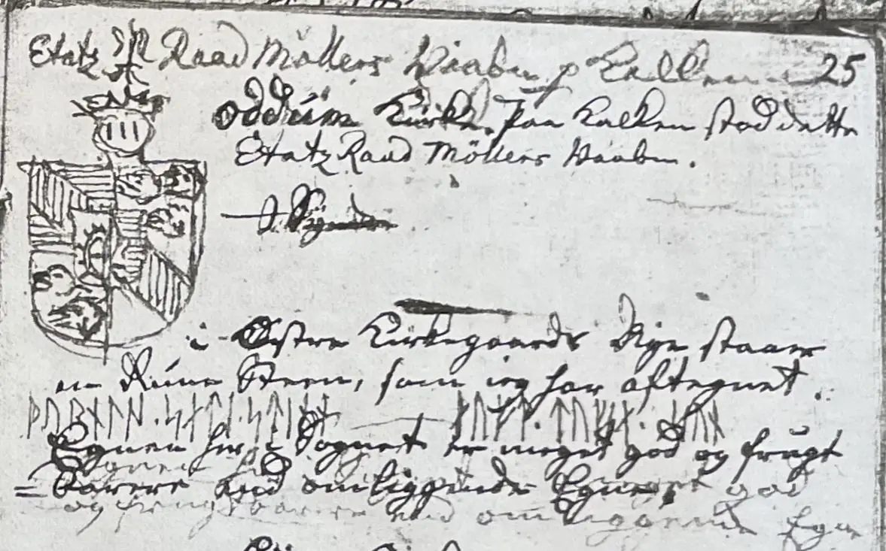

Seine Tagebücher befinden sich heute im Antiqvarisk-Topografisk Arkiv in Kopenhagen. Dies ist die Fotografie der betreffenden Seite einer Kopie, die auch dort vorgehalten wird und die ich am 28.09.2022 fertigen durfte.
Carl Christian Rafn (*16.01.1795 - 20.10.1864, Altertumsforscher - link LIVES - Bestattungsprotokoll)
 Bildquelle: Zeichner
Magnus Petersen -
Det Kgl. Biblioteks billedsamling - Lizenz:
Public Domain
Bildquelle: Zeichner
Magnus Petersen -
Det Kgl. Biblioteks billedsamling - Lizenz:
Public Domain
hat in seinem Werk von 1856 "Antiquités de l'Orient, monuments runographiques auf der S. 201 seine Deutung der Inschrift abgedruckt.
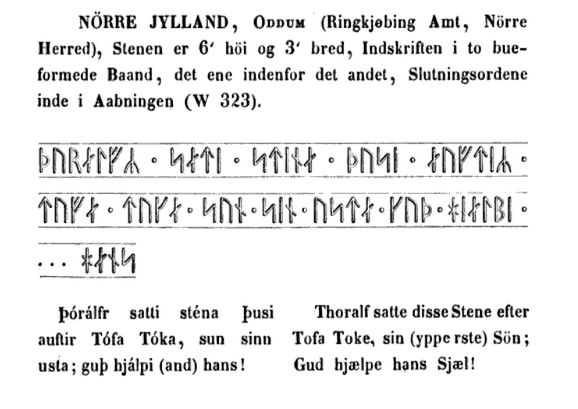
George Stephens (*13.12.1813 - 09.08.1895, englischer Archäologe und Philologe)
 Bildquelle:
Minder fra min Virksomhed paa Arkæologiens
Omraade fra 1845 til 1908 von
Magnus Petersen (*04.09.1827 - 01.02.1917) auf der
Seite 265 - Lizenz:
Public Domain
Bildquelle:
Minder fra min Virksomhed paa Arkæologiens
Omraade fra 1845 til 1908 von
Magnus Petersen (*04.09.1827 - 01.02.1917) auf der
Seite 265 - Lizenz:
Public Domain
macht im Band II (1867-68) seines Werkes The old-northern runic Monuments of Scandinavia and England auf der S. 763 Ausführungen zu diesem Runenstein und gibt diese Zeichnung
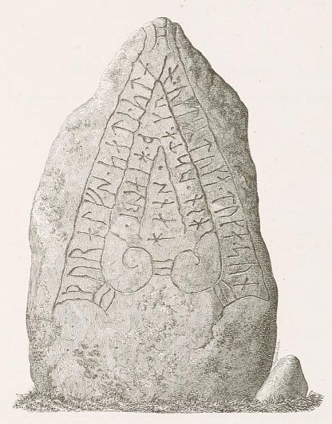
von Prof. Julius Magnus Petersen (*04.09.1827 - 31.01.1917, Archäologischer Zeichner und Restaurator - link-LIVES - Bestattungsprotokoll)
 Bildquelle: Fotografie
von 1903 von Fotograf Marius Christensen
(*24.6.1874 -
25.6.1907) -
Det Kgl. Biblioteks billedsamling - Lizenz:
Public Domain
Bildquelle: Fotografie
von 1903 von Fotograf Marius Christensen
(*24.6.1874 -
25.6.1907) -
Det Kgl. Biblioteks billedsamling - Lizenz:
Public Domain
wieder, die auf einer Zeichnung aus dem Jahr 1865 von Jacob Kornerup (*19.11.1825 - 09.03.1913, dänischer Archäologe und Zeichner aus Roskilde - link-LIVES)
 Bildquelle:
Wikipedia
- Lizenz:
Public Domain
Bildquelle:
Wikipedia
- Lizenz:
Public Domain
basiert - siehe oben. Er führt u.a. aus, dass die Lesung und Deutung bei Carl Christian Rafn fehlerhaft wiedergegeben sei.
In seinem Band III (1884) bringt George Stephens auf der S. 326 noch einen Nachtrag zu diesem Runenstein. Dort wird u.a. angeführt, dass Magnus Petersen ihn 1873 neu gezeichnet und neu begutachtet hat, worüber dieser die Lesung des ersten Wortes nun mit
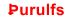
und nicht wie zuvor mit annimmt.Der Runenstein ist natürlich auch in den beiden großen dänischen Runenwerken von P. G. Thorsen und von Ludv. F. A. Wimmer vertreten.
Prof. P. G. Thorsen (*07.08.1811 - 06.05.1883, Bibliothekar, Runenforscher und Historiker - link-LIVES - Artikel: Levnedsbeskrivelser af de ved Københavns Universitets Firehundredaarsfest promoverede Doktorer, Illustreret Tidende 1882, Nr. 1235 - vom 27.05.1833 / Grabstein in Varde / Eheschließung in Varde am 19. August 1848)
Bildquelle: Fotografie zw. 1863-1900 von
Fotograf Budtz Müller (*26.12.1837 -
30.12.1884) -
Det Kgl. Biblioteks billedsamling - Lizenz:
Public Domain
bringt in De danske runemindesmærker beskrevne og forklarede, anden Afdeling, Jyllands Runemindesmærker, I. Afbildninger, 1879, Nr. 17 - diese Zeichnung von Magnus Petersen - Google Scan. In seinem Band II, Text, 1880, macht er dann auf den S. 41-44 auch schriftliche Ausführungen.
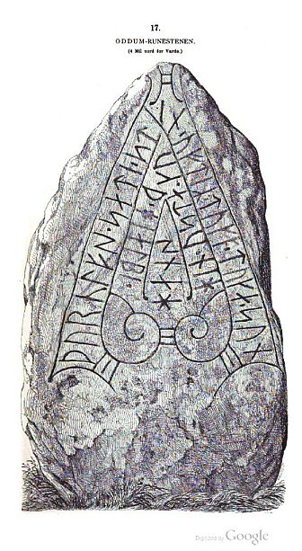
Auch P. G. Thorsens Nachlass (Bezeichnet als: P. G. Thorsens optegnelser, tegninger m.m. vedrørende runer og runemindesmærker - überführt aus der Kopenhagener Universitätsbibliothek 1929 - Gemäß Ministerialschreiben vom 04.03.1929; früher benannt als Additamenta 612 kvart) - findet sich in der Königlichen Bibliothek unter NKS 3296 kvart (in mehreren einzelnen Pappschachteln). In der Pappschachtel Nr. 6 ist auch zu Ådum etwas dabei, obwohl es alphabetisch eigentlich überhaupt nicht da reinpasst, aber damals eben als Oddum geschrieben wurde. Es handelt sich dabei um einen Brief von Jacob Kornerup an P. G. Thorsen zu den beiden Runensteinen von Hanning und von Ådum, der auf den 23.10.1865 datiert ist. Jacob Kornerup bringt darin zunächst vor, dass er ihm damit insgesamt vier Zeichnungen übersendet.
Den Brief schließt er mit der Hoffnung, dass sein Honorar für die vier Zeichnungen mit 15 Rd als nicht zu hoch angesetzt erscheint. Die Währungseinheit Rigsdaler war in Dänemark von 1854-73 in Gebrauch und wurde danach von der Krone abgelöst. Für einen Rigsdaler gab es damals 2 Kronen.
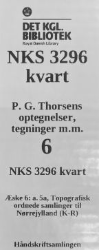


Daneben findet man aber noch diesen kräftigen Papierstreifen - mit Buntstift Oddum darauf vermerkt - der einen Teil der Runeninschrift wiedergibt. P. G. Thorsen und später auch Ludv. F. A. Wimmer haben große Blätter aus dickem, stark verklebtem Papier, das speziell für diesen Zweck bearbeitet worden war, mit einem Pinsel in nassem Zustand auf/in den Stein gedrückt und das Blatt erst entfernt, wenn Sonne und Wind es getrocknet hatten. Danach war das Papier so steif, dass die Inschrift des Steins darauf deutlich hervortrat. Durch die besonderen Eigenschaften des Papiers haben sich die Abzüge gut erhalten.Wie mir scheint stammt der Abdruck vom linken Runenband und gibt die 3-5 Rune von unten wieder.

In der Schachtel 17 zu P. G. Thorsen findet sich diese schöne Zeichnung von Magnus Petersen die auf den 29.07.1873 datiert ist und den Stein noch in der Kirchhofumfriedungsmauer zeigt.
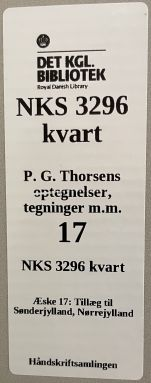

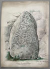
Außerdem finden sich in dieser Schachtel 17 zwei Zeichnungen, die wohl von P. G. Thorsen selbst stammen und aus den Jahren 1838 und 1845 datieren. Die erste ist wohl die Wiedergabe der 1772 angefertigten Zeichnung / Textanmerkung von Søren Abildgaard.


Hier noch die Zeichnung von Jacob Kornerup des Ådum Runensteins aus der Schachtel 17.

Prof. Ludv. F. A. Wimmer (*07.02.1839 - 29.04.1920, Philologe und Runenforscher - link-LIVES - Politiets registerblade - Bestattungsprotokoll)
Bildquelle:
Fotografie zw. 1877-1900 von Fotograf Hansen & Weller
-
Det Kgl. Biblioteks billedsamling - Lizenz:
Public Domain
berichtet in seinem herausragenden Werk "De danske runemindesmærker undersøgte og tolkede af Ludv. F. A. Wimmer, Andet Bind - Runestenene i Jylland og på øerne. 1899-1901" - ab der Seite 285 über den "Oddum" Runenstein. Die u.a. Abbildung findet sich auf der S. 287 und stammt von Magnus Petersen. Ludv. F. A. Wimmer hat den Runenstein persönlich vor Ort am 27.August 1878 untersucht.
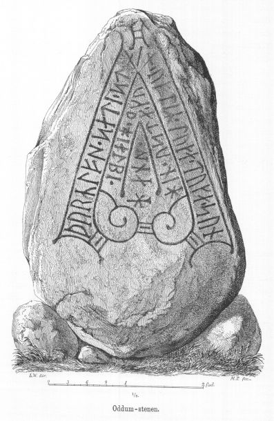
Ludv. F. A. Wimmer hat seine jahrelangen Aufzeichnungen der
"Kgl.
Bibliotek" in
Kopenhagen überlassen. Ein
Verzeichnis darüber wurde 1915 in Buchform herausgegeben -
In seinen Unterlagen in der Bibliothek befinden sich unter "III - Originaltegninger af de danske Runemindesmærker, udførte paa Undersøgelsesrejserne af Magn. Petersen og kontrollerede paa Stedet af Ludv. Wimmer, samt Prøvetryk af de paa Grundlag af de nævnte Tegninger, Aftryk o. s. v. til De danske Runemindesmærker" udførte Afbildninger med Wimmers Rettelser" zu dem Runenstein von "Oddum" unter der Nr. 74 handschriftliche Aufzeichnungen von 1878, die ich am 27.09.2022 fotografieren durfte.


Diese wohlbedacht ausgeführte Zeichnung von Magnus Petersen - datiert auf den 27.08.1878 - habe ich hier als Miniatur eingestellt, die sie auf Mausklick deutlich vergrößern lässt.
Dieses sw Foto ist durch Erik Moltke (*04.04.1901 - 19.10.1984, Runologe, Historiker - link-LIVES)
Bildquelle: Scan von Buchumschlag "Runerne i Danmark og ders
oprindelse" - Erik Moltke - 1976 - Lizenz:
CC-BY-SA
am 06.06.1931 aufgenommen und nachbereitet worden.
Der Digitalen Sammlung des Dänischen Nationalmuseums in Kopenhagen entnommen - Lizenz: CC-BY-SA
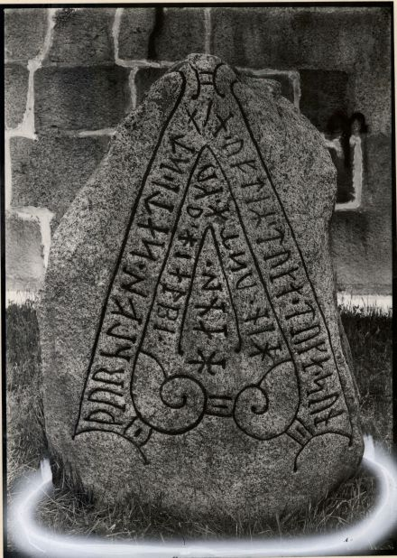
Darauf sind alle Runenzeichen eindeutig erkennbar, was heute leider nicht (mehr) der Fall ist. Der Stein weist inzwischen starke Verwitterungsspuren an seiner Wetterseite auf, so dass sich schon Lis Jacobsen (*29.01.1882 - 18.06.1961, dänische Runologin und Archäologin -link-LIVES) - Taufe - Melderegister - Borgerlig vielse
 Bildquelle:
Wikipedia - Lizenz:
Public Domain
Bildquelle:
Wikipedia - Lizenz:
Public Domain
die Frage gestellt hat, wie lange man den Stein wohl noch im Freien stehen lassen kann.
Im Vorfeld zu dem 2016 erschienenen Buch von Lisbeth M. Imer (*1973, Runologin am Nationalmuseum Kopenhagen) "Danmarks Runesten - en fortælling" reiste sie mit dem Fotografen Roberto Fortuna zur Bestandsaufnahme durch die Lande. Dieser hat die Runensteine abends bei Dunkelheit mit Schräglicht aufgenommen und darüber wirklich herausragende Fotos erzielt. Diese Aufnahme entstand am 06. März 2012.
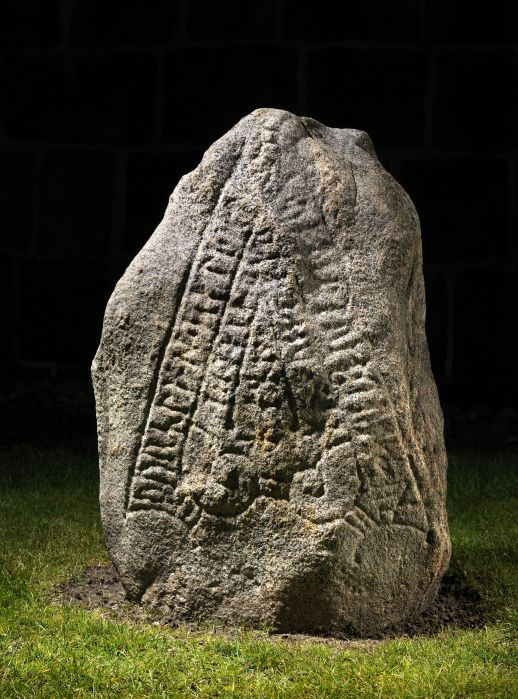
Der digitalen Datenbank des Nationalmuseums Kopenhagen entlehnt - Lizenz: CC-BY-SA
Die Informationen der dänischen Online-Runen-Datenbank zu diesem Runenstein (in dänischer Sprache) finden sich hier.
Die Informationen in "Fund og Fortidsminder" zu dem Runenstein finden sich hier. Darin ist inzwischen dieser Zustandsbericht des Steinrestaurators Leif Vognsen aus dem Jahr 2018 eingebettet.
Über die Webseite "Runes" - ein Forschungsprojekt der Akademie zu Göttingen- kann man diese Informationen zum Runenstein von Ådum abrufen.